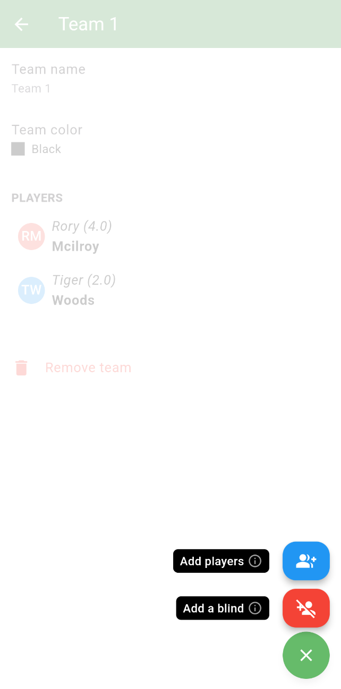
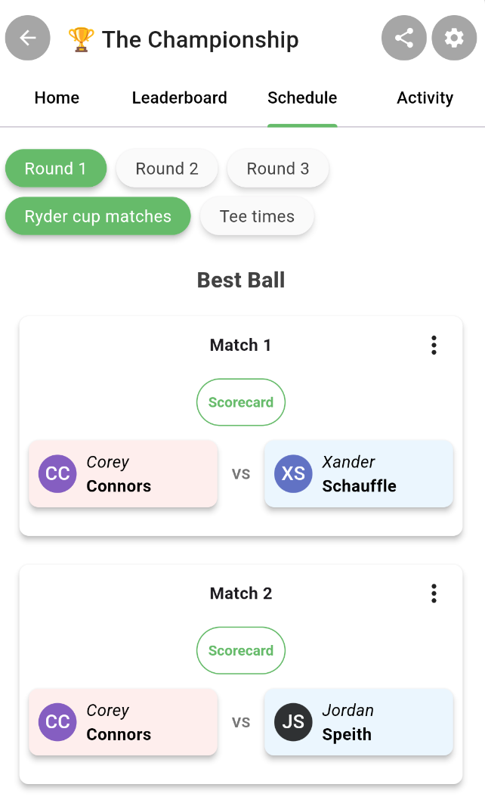

Adding a Team Blind
When playing team formats, it’s common to end up with uneven team sizes. To keep competition fair without reshuffling players, Squabbit allows you to use a blind (sometimes called a ghost).
A blind is a scoring placeholder that helps balance teams while still using real scores from the round.
Team-Based Formats (Scramble, Best Ball, etc.)
For formats where a team’s score is calculated collectively—such as scramble or best ball—a blind is added directly to the team with fewer players.
In Squabbit:
- You select a player from another team to act as the blind
- That player’s hole scores count toward both teams
- The player continues to compete normally for their original team
- The blind player does not receive any purse or winnings if the team they are a blind on wins
This approach keeps both teams scoring the same number of balls per hole while avoiding artificial or fixed scores.
To add a team blind:
- Tap Gear icon › Format name (e.g. Scramble)
- Tap Teams
- Create a team or edit an existing team you want to add a blind to
- Tap the green + button Add a blind. If you do not see this option, then you are likely playing a format like Ryder Cup or Team Matchplay which handles blinds differently (see the Match-Based formats section below)

Match-Based Formats (Ryder Cup)
In match-based formats like a Ryder Cup, blinds are handled slightly differently.
Instead of adding a blind to a team, balance is achieved at the match level. When creating matches:
- A player from the larger team can be selected in multiple matches
- That same player’s score is used in each match they appear in
- This allows all matches to be filled even when teams have uneven numbers
This effectively creates a blind by letting one player represent their team in more than one match, without needing a separate placeholder player.
To add a match blind:
- Open the Schedule tab
- You can add the same player to multiple matches

Why Use Blinds?
Blinds are especially useful when:
- Players drop out at the last minute
- Teams don’t divide evenly
- You want to preserve the chosen format without adjustments
Using blinds in Squabbit ensures fair scoring, smooth gameplay, and minimal disruption—whether you’re running a casual round or a competitive event.